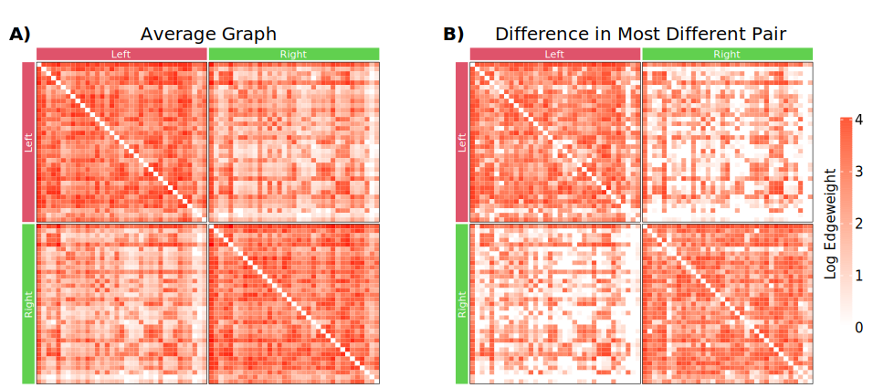

%load_ext rpy2.ipython
import numpy as np
import pandas as pd
from pkg.plot import Figure, Panel, SmartSVG, Text
from scipy.spatial.distance import squareform
from twins.data import load_dataset
%%R
myPaths <- .libPaths()
myPaths <- c("/home/j1c/R/packages", myPaths)
.libPaths(myPaths)
suppressPackageStartupMessages(library(ComplexHeatmap))
suppressPackageStartupMessages(library(circlize))
suppressPackageStartupMessages(library(extrafont))
suppressPackageStartupMessages(library(svglite))
invisible(font_import())
subjects = [
str(sub)
for sub in pd.read_csv(
"../../twins/data/subject_metadata/truncated_restricted_processed_valid_subjects.csv"
).Subject
]
df = pd.read_csv(
"../../twins/data/subject_metadata/truncated_restricted_processed_valid_subjects.csv"
)
df = df.sort_values("Subject")
df.head()
# remove singletons
uniques, counts = np.unique(df.Family_ID, return_counts=True)
singletons = []
for unique, count in zip(uniques, counts):
if count == 1:
sub = df[df.Family_ID == unique].Subject.iloc[0]
singletons.append(sub)
singleton_idx = df.Subject.isin(singletons).values
np.save("./average_graph", average_graph)
np.save("./maximum_diff", maximum_diff)
parc = "Desikan"
graphs = load_dataset(parcellation=parc, ptr=None)
graphs = {key: val for key, val in graphs.items() if key in subjects}
X = np.load(f"../../twins/notebooks/outs/1-connectome-distances/arrs/exact_{parc}.npy")
X = np.linalg.norm(X, axis=(1, 2))
average_graph = np.mean(list(graphs.values()), axis=0)
average_graph[average_graph < 1] = 0
maximum = X.max()
idx, _ = np.where(squareform(X) == maximum)
sub1 = df.iloc[idx[0]].Subject
sub2 = df.iloc[idx[1]].Subject
A1 = graphs[str(sub1)]
A2 = graphs[str(sub2)]
maximum_diff = np.abs(A1 - A2)
vmax = np.log10(np.max([maximum_diff, average_graph]))
vmin = 1
average_graph = np.log10(average_graph + 1)
maximum_diff = np.log10(maximum_diff + 1)
%%R -i average_graph -i maximum_diff
plotting.labels <- c()
for (i in 1:35){
plotting.labels <- c(plotting.labels, "L")
}
for (i in 1:35){
plotting.labels <- c(plotting.labels, "R")
}
vmax <- max(c(average_graph, maximum_diff))
# plotting.labels <- c(plotting.labels, tolower(plotting.labels))
plotting.labels <- factor(plotting.labels, levels = unique(plotting.labels))
# Make the heatmap
plot.heatmap <- function(matrix, name, save=FALSE, width=unit(1, "npc")) {
ha = HeatmapAnnotation(
foo = anno_block(
gp = gpar(fill = 2:8, col = 0),
labels = c("Left", "Right"),
labels_gp = gpar(
col = "white",
fontsize = 14,
fontfamily = "DejaVu Sans"
# fontface="bold"
)
),
height = unit(6, "mm")
)
ra = rowAnnotation(
foo = anno_block(
gp = gpar(fill = 2:8, col = 0),
labels = c("Left", "Right"),
labels_gp = gpar(
col = "white",
fontsize = 14,
fontfamily = "DejaVu Sans"
# fontface="bold"
)
),
width = unit(6, "mm")
)
if (!isFALSE(save)){
width <- 7
height <- width
svglite(paste0("./figures/", save, ".svg"), width=width, height=height)
# svg(paste0("./figures/", save, ".svg"))
}
ht <- Heatmap(
matrix = matrix,
col = colorRamp2(c(0, vmax), c("white", "red")),
border = TRUE,
rect_gp = gpar(lwd=0.0, col=0),
name = "Edge Weight",
column_title = name,
column_title_gp = gpar(fontsize = 25, fontfamily = "DejaVu Sans"),
cluster_columns = FALSE,
cluster_column_slices = FALSE,
show_column_names = FALSE,
cluster_rows = FALSE,
cluster_row_slices = FALSE,
show_row_names = FALSE,
row_title = NULL,
column_split = plotting.labels,
row_split = plotting.labels,
top_annotation = ha,
left_annotation = ra,
heatmap_width = width,
heatmap_height= width,
show_heatmap_legend = FALSE
)
draw(ht)
if (!isFALSE(save)){
dev.off()
}
}
%%R
plot.heatmap(average_graph, "Average Graph", "3a-average")
plot.heatmap(maximum_diff, "Difference in Most Different Pair", "3b-difference")
png
2
%%R
# Make legend
svglite(paste0("./figures/", "3-legend", ".svg"), height=3.1, width=0.65)
colorbar < -Legend(
col_fun=colorRamp2(c(0, vmax), c("white", "red")),
title="Log Edgeweight",
legend_width=unit(1, "inches"),
legend_height=unit(3, "inches"),
direction="vertical",
title_position="leftcenter-rot",
title_gp=gpar(fontsize=14, fontfamily="DejaVu Sans"),
labels_gp=gpar(fontsize=14, fontfamily="DejaVu Sans"),
)
pd = packLegend(colorbar, direction="horizontal")
draw(
pd,
)
dev.off()
png
2
fontsize = 20
parta = SmartSVG("./figures/3a-average.svg")
parta.set_width(500)
parta.move(20, 25)
parta_panel = Panel(
parta, Text("A)", 10, 44, size=fontsize, weight="bold", font="DejaVu Sans")
)
partb = SmartSVG("./figures/3b-difference.svg")
partb.set_width(500)
partb.move(20, 25)
partb_panel = Panel(
partb, Text("B)", 10, 44, size=fontsize, weight="bold", font="DejaVu Sans")
)
partb_panel.move(parta.width * 0.95, 0)
legend = SmartSVG("./figures/3-legend.svg")
legend.set_height(300)
legend.move(0, 25)
legend.move((parta.width + partb.width) * 0.9, parta.height * 0.2)
fig = Figure(
(parta.width + partb.width + legend.width) * 0.9,
(parta.height) * 0.85,
parta_panel,
partb_panel,
legend,
)
fig.save("./figures/3-composite.svg")
fig

import cairosvg
cairosvg.svg2pdf(url="./figures/3-composite.svg", write_to="./figures/3-composite.pdf")
Using python#
import matplotlib
import matplotlib.pyplot as plt
import numpy as np
import pandas as pd
import seaborn as sns
from graspologic.plot.plot import _process_graphs
from graspologic.plot.plot_matrix import _remove_shared_ax, draw_colors
from graspologic.simulations import sbm
from matplotlib.colors import ListedColormap
from mpl_toolkits.axes_grid1 import make_axes_locatable
from pkg.plot import Figure, Panel, SmartSVG, Text, heatmap
X = np.load("./average_graph.npy")
Y = np.load("./maximum_diff.npy")
hexes = [
"#ffffff",
"#fff5f0",
"#fee0d2",
"#fcbba1",
"#fc9272",
"#fb6a4a",
"#ef3b2c",
"#cb181d",
]
rgbs = [matplotlib.colors.hex2color(i) for i in hexes]
cmap = sns.blend_palette(rgbs, as_cmap=True)
cmap
layout = [
["X", "Y", "cbar"],
]
fig, axes = plt.subplot_mosaic(
layout, figsize=(12, 5), dpi=150, width_ratios=[1, 1, 0.05]
)
heatmaps = dict(X=X, Y=Y)
inner_hier_labels = ["Left"] * 35 + ["Right"] * 35
for key, data in heatmaps.items():
if key == "cbar":
continue
heatmap_kwargs = dict(
cmap=cmap,
vmax=4.1,
center=None,
cbar=True,
cbar_ax=axes["cbar"],
)
ax = axes[key]
heatmap(
data,
ax,
inner_hier_labels,
heatmap_kwargs=heatmap_kwargs,
)
gap = 0.0035
xloc = data.shape[0] // 2
for i in range(xloc * 2):
ax.axhline(i, c="w", lw=0.075)
ax.axvline(i, c="w", lw=0.075)
axes["cbar"].set_ylabel(
"Log Edge Weight",
)
axes["cbar"].tick_params(direction="in", length=4, width=1, color="w")
title_kwgs = dict(loc="left", fontsize=15, pad=25)
axes["X"].set_title("A) Average Connectome", **title_kwgs)
axes["Y"].set_title("B) Difference in Most Different Pair", **title_kwgs)
fig.savefig("./figures/3-data.svg", bbox_inches="tight")